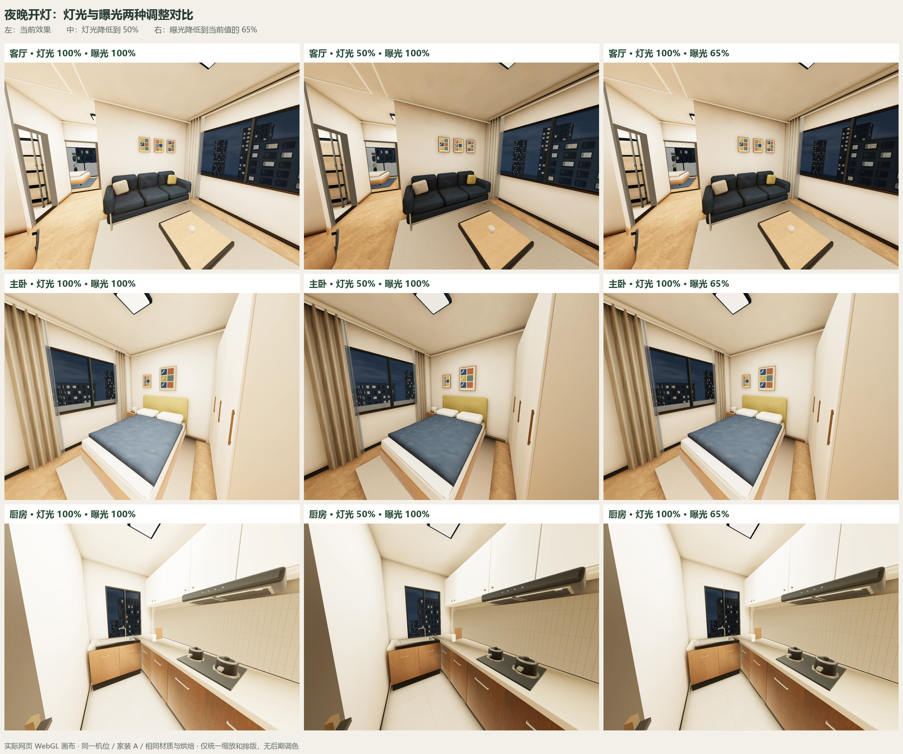
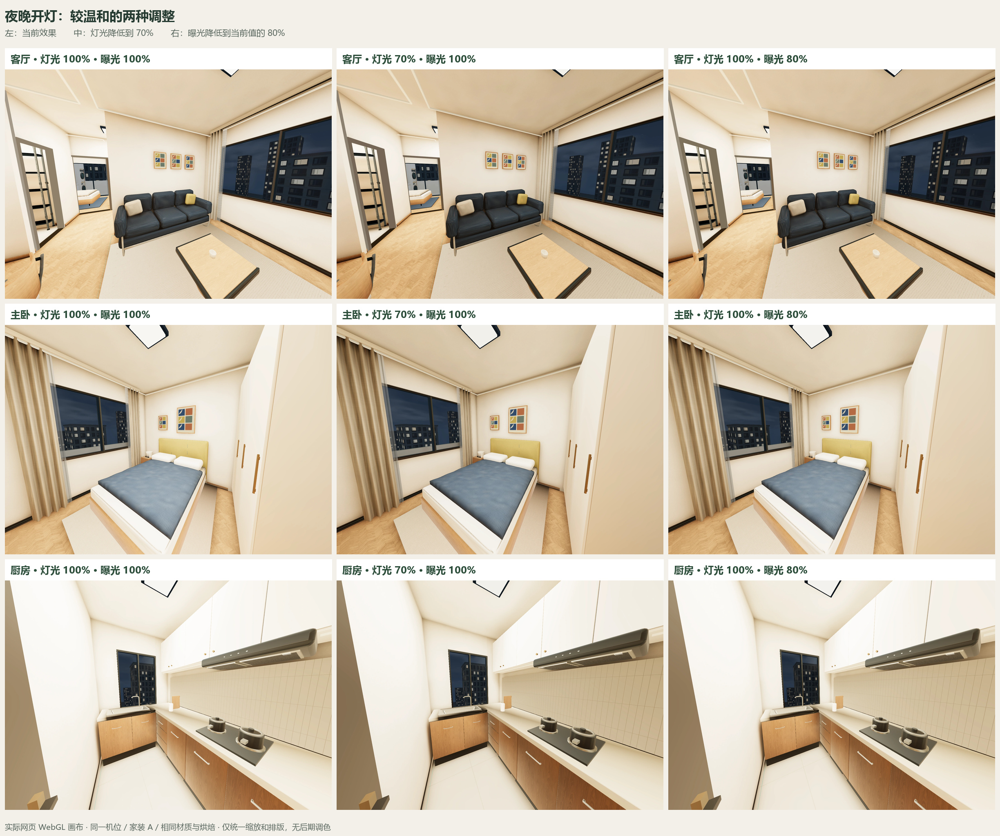
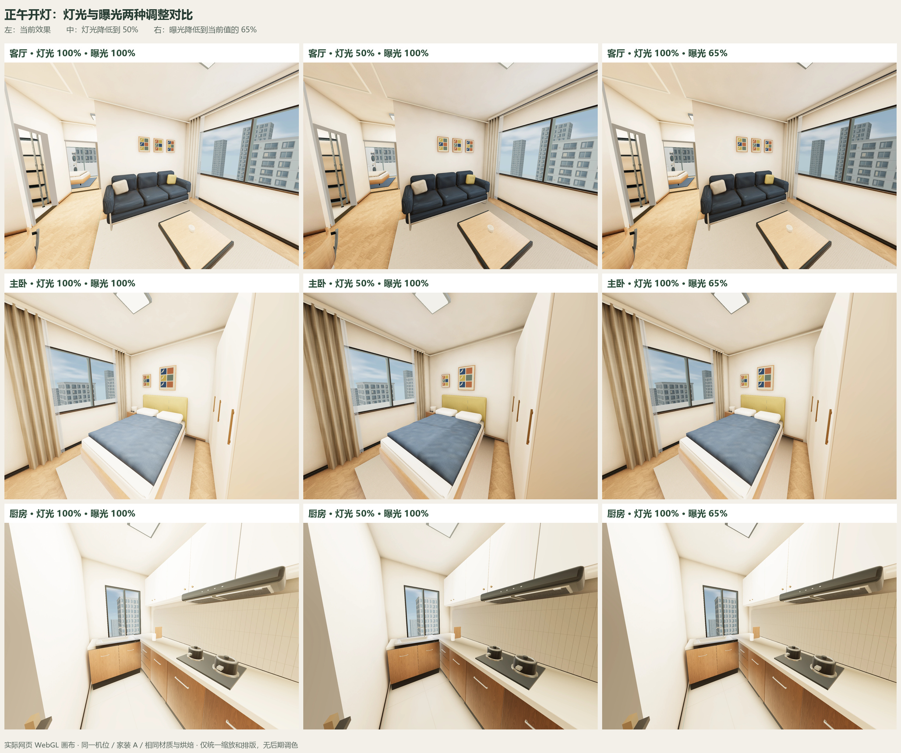
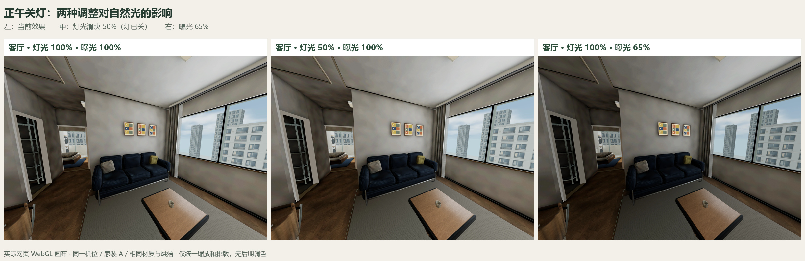

杭州 · 璞荟铭庭 / main 亮度试验
室内过亮：灯光和曝光分别测试
此页保留上一轮实验的基线与截图。当前 main 已实际校正亮度并修正重叠面，见 最新过曝与模型穿插对比；旧图不代表当前默认效果。
同一机位、时间、家装 A 和材质，分别降低灯光亮度、降低整体曝光，观察墙顶高亮、家具暗部以及窗外亮度。当前网页默认值保持原样，这一页用于选择调整幅度。
观察建议：优先考虑把灯光调至50%、曝光保持原值。它能降低夜间墙顶和白柜的亮度，同时保留窗外与自然光。若只希望温和调整，可先用灯光70%；曝光65%更适合整张画面都偏亮的情况，但会同时压暗窗外和关灯后的室内。
测试参数
| 方案 | 灯光亮度 | 相对曝光 | 影响 |
|---|---|---|---|
| 当前效果 | 100% | 100% | 原样基线 |
| 灯光70% | 70% | 100% | 较温和地减弱室内灯 |
| 灯光50% | 50% | 100% | 更明显地减弱室内灯，保留自然光和窗外 |
| 曝光80% | 100% | 80% | 整张画面轻度压暗 |
| 曝光65% | 100% | 65% | 整张画面进一步压暗，含窗外与暗部 |
曝光百分比相对于现有各时段的曝光值。夜晚原值1.188，80%为0.9504、65%为0.7722；正午原值1.3064，80%为1.04512、65%为0.84916。灯光百分比是灯强度输入，不代表画面亮度按相同比例下降。
滑动查看差异
原效果灯光50%
并排效果图
每张图均为三列：左侧原效果，中间只降灯光，右侧只降曝光；点击可打开完整分辨率。




采集和验证范围
共70张实际WebGL画布：桌面/手机两种视口，3个房间的正午/夜晚开灯，以及客厅正午关灯对照，每组5个参数。每次均等待Cycles固定照明重组及房间PMREM更新后采集，固定相机、FOV、时间与材质。灯光使用现有界面滑块，曝光通过仅供采集的诊断钩子调整渲染器，不改任何光源或材质。4张总览只统一缩放并添加标题，没有对截图做亮度、色彩或阴影后期处理。
原建筑219张烘焙、13张PBR图、静态照明与反射均正常；建筑快照保持、屋顶无缺口、无脚本/Shader错误或外部依赖请求。灯关时灯光滑块对画面均值无可见影响；曝光降低时画面均值随之下降。手机为触控/微信UA模拟，不代表真机。整个采集使用隔离浏览器上下文，不读写用户实际页面的个人保存设置。